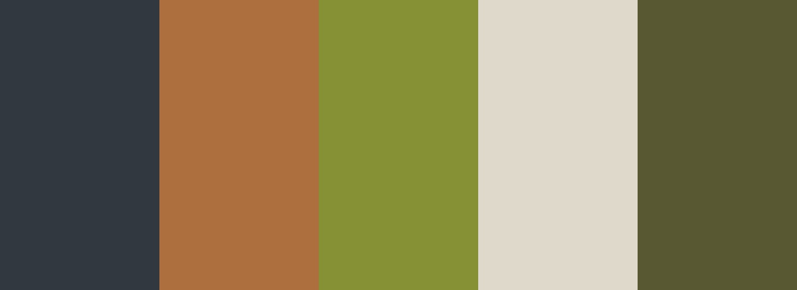

My Color Palette
What is the color palette?

What is the color palette?
This webpage uses an analogous colour scheme of terracotta, olive, and dark/moss green, with white and slate charcoal as neutrals. These neighbouring colours blend smoothly and recall natural materials like moss, wood and rock. These colours makes the tone feel warm and grounded.